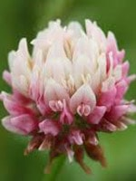
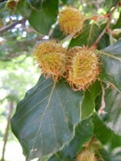
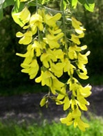
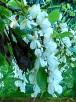
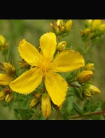
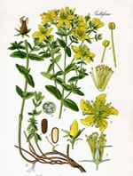

|
|
| Algemene informatie |
|
De hieronder geplaatste lijst is lang niet compleet, maar toont de meest voorkomende planten in en om de wei. Veel tuin- en kamerplanten en zeker bollen zijn ook giftig maar worden hier niet genoemd. De informatie is bedoeld als voorlichting en dus informatief en kan niet gezien worden als vervanging van een behandeladvies. • Waarschuw altijd een dierenarts bij een vermoeden van vergiftiging. • De in de winter groenblijvende planten zijn meestal giftig. • Paarden eten giftige planten vaak niet omdat ze niet lekker smaken. Bij gebrek aan voedsel of in gedroogde vorm kan het wel voorkomen dat je paard van de planten eet. • Sommige planten kunnen onder bepaalde weersomstandigheden hun bittere smaak verliezen. Zoals de boterbloem in een natte en groeizame herfst. • Veiligheid voor alles: bestrijd giftige planten in de wei en aanliggende sloten en greppels en laat je paard geen hapjes nemen van planten op een buitenrit. Wanneer dierenarts raadplegen? • als je paard mager en sloom is en veel gaapt • als de slijmvliezen echt geel zijn • als je paard verlammingsverschijnselen vertoont • als je paard ongecoördineerd beweegt Wat kun je de dierenarts vertellen? • hoeveel heeft welk paard ongeveer gegeten • wat is er gegeten • tijdstip van inname • verschijselen (inclusief eten, drinken, mesten en plassen) • verloop • wat heb je al gedaan en wat was het effect Hoe bestrijden? Een goed verzorgde dichte grasmat verstikt veel onkruid. Voorkom kale plekken en maai regelmatig om een dichte grasmat te krijgen. Uitbreiding van ongewenste planten kun je soms voorkomen door ze voor de bloei te maaien. Wanneer ze zich echter uitbreiden via een wortelstok heeft dit weinig zin. Vele planten houden van zure en arme grond. Bemesten en kalk strooien geeft het onkruid minder kans. Controleer welke bomen er om de wei staan en verwijder giftige bomen. (On)kruiden spuiten Het is vrijwel onmogelijk om in een groot weiland de ongewenste planten handmatig te bestrijden. Uiteindelijk is het gebruik van een chemisch bestrijdingsmiddel soms noodzakelijk. Beter is het om regelmatig pleksgewijs het onkruid te bestrijden i.p.v. het hele weiland te bespuiten. Bedenk echter wel dat chemische bestrijding belastend is voor het milieu. 1 tot 4 weken na chemische bestrijding niet beweiden. |
| Adelaarsvaren - Pteridium aquilinum | ||||||||||||||||||||
Meer foto's Symptomen
Plant bevat thiaminase welke leidt tot een tekort aan vit. B (en wezenlijk nutriënt voor het centrale zenuwstelsel en metabolisme).
De symptomen ontwikkelen zich na één à twee maanden van chronishe inname en kan binnen twee à drie dagen verslechteren.
Omschrijving
Grote, forse varenplant met een dikke, zwarte diep in de grond kruipende wortelstok, waaruit van afstand tot afstand sterk samengestelde veren oprijzen, de "adelaar" in de bladsteel wordt veroorzaakt door de donkergekleurde bastbundels.
De stengel is aan de voet zwart, maar wordt naar boven toe groen en de onderkant is licht-wollig behaard. |
||||||||||||||||||||
| Bastaardklaver - Trifolium hybridum | |||||||||||||||||||||||
Meer foto's

Symptomen Er zijn twee ziektebeelden: • fotosensitieve reactie: zonnebrand en pigmentloze huid. Getroffen plekken worden pijnlijk en vormen wondjes en ontstekingen van de mond en tong.
Omschrijving De rechtopstaande stengels zijn kaal en hol en wortelen niet op de knopen (een verschil met Witte klaver). De bolvormige tot eironde hoofdjes staan op lange stelen in de bladoksels en aan de top van de stengels. De bloemkroon is eerst wit, wordt later roze, maar krijgt bij verwelking een vleeskleurige tot oranjebruine tint. De 7 tot 10 mm grote bloemen verspreiden een zoete geur. |
| Beuk - Fagus sylvatica | ||||||||||||||||||||
Meer foto's

Symptomen
Oorzaak: oxaalzuur, thiaminase, fagine Kan hemolyse, nierschade en bloedarmoede veroorzaken. Kan binnen 12 uur dodelijk zijn door hevige krampen Omschrijving
Mannelijke katjes bijna kogelvormig, lang gesteeld, hangend, vrouwelijk met weinig bloemen, twee in een omhulsel bij elkaar.
Vruchtomhulsel stekelig, met vier kleppen uiteenwijkend. Bladen ovaal of eliptisch met 5-9 paar zijnerven en bijna onmerkbaar getande rand. Schors glad, grijs. De beukennootjes worden omsloten door een napje, dat gevormd wordt uit de vruchtbladen en de schutbladen. In elk napje zitten twee nootjes. Als de nootjes rijp zijn opent het napje in vier delen |
||||||||||||||||||||
| Bosanemoon - Anemone nemorosa | |||||||||||||||||||

Meer foto's Symptomen
Oorzaak: protoanemonine en anemonine Omschrijving
Bloemen wit of roodachtig. Uit de vlezige wortelstok ontspringt dicht bij het uiteinde een bloeistengel met één bloem en 3 kransgewijs geplaatste, samengestelde omwindselbladen; daarnaast staan op de wortelstok één of meer gewone eveneens samengestelde bladen.
De bloem heeft geen kroon, kelk is wit of paarsrood. |
|||||||||||||||||||
| Boterbloem (scherp) - Ranunculus acris | ||||||||||||||||||||
Meer foto's Symptomen
Oorzaak: Alkaloide protoanemonine, anemol, saponinen en blauwzuurverbindingen In een extreem natte, groeizame herfst verliest de plant zijn vieze smaak en wordt dan wel gegeten door het paard. Omschrijving
Een korte wortelstok. De rechtopstaande stengels zijn behaard en dofgroen. De bloemstelen zijn slank, rond en niet gegroefd.
De handvormige bladeren zijn gedeeld in 5 of 7 slippen. De gele bloemen zijn 2 tot 3 cm in doorsnee. Ze hebben 5 kroonbladen en een rechtopstaande kelk. |
||||||||||||||||||||
| Buxus - Buxus sempervirens | ||||||||||||||||||||||
Meer foto's Symptomen
De dood treedt in door ademstilstand en hartstilstand. Oorzaak: Alkaloide, buxine Omschrijving
De tegenoverstaande, groenblijvende bladen zijn eirond, 1 tot 3 cm lang, leerachtig, bijna zittend, aan de bovenkant donkergroen en aan de onderkant lichtgroen.
De bloemen groeien in bladokselstandige kluwens. Ze worden 2 tot 3 mm groot en zijn geelachtig groen van kleur. Een eivormige, bruine, rimpelige doosvrucht van 0,5 tot 0,8 cm. |
||||||||||||||||||||||
| Dotterbloem - Caltha palustris subsp. palustris | ||||||||||||||||||||
Meer foto's Symptomen
Overlijden is mogelijk. Oorzaak: Saponinen en alkaloiden Omschrijving
De holle, rechtopstaande stengels zijn naar boven vertakt of ze kruipen en wortelen dan op de knopen. De plant groeit in pollen. De stengelknoppen onder de bloemen zijn hol en niet verdikt. Ze wortelen niet.
De kale, tot 15 cm brede bladeren zijn hartvormig, getand en glanzig. De onderste bladeren hebben meestal een lange steel, de bovenste zijn kleiner en vrijwel zonder steel. De glanzend gele bloemen zijn 2 tot 5 cm groot. |
| Duizendblad - Achillea millefolium | |||||||||||||||||||
Meer foto's Symptomen
oorzaak:Glycoalkaloids (achillen), monoterpenes, sesquiterpene lactones De plant wordt vaak genoemd voor zijn genezende kwaliteiten, o.a. bij het helen van wonden. Is zwak gitig bij opname van grote hoeveelheid. Omschrijving
De bladeren zijn geveerd en ruiken vrij sterk als je ze wrijft. De witte bloemen zijn 3 tot 6 mm. breed en vormen een dichte, schermvormige pluim met veel hoofdjes.
De wortels hebben ondergrondse kruipende uitlopers tot een meter diep. |
| Eik - Quercus | |||||||||||||||||||

Meer foto's Symptomen
oorzaak: Gallotannine Komt het meest voor in jong blad en jonge eikels. Omschrijving
Een majestueuze boom die meer dan 30 meter hoog kan worden en een zeer hoge leeftijd kan bereiken (2000 jaar), de stam is gedrongen, de schors grijsbruin, op latere leeftijd wordt ze zwart met spleten waar veel dieren in verblijven. De kroon van de boom is breed vertakt. De Zomereik heeft een kort of ongesteeld blad, de Eikels zijn weer wel langgesteeld, de Wintereik heeft gesteeld blad en kortgesteelde eikels, het blad van de Wintereik is bovendien lichter dan dat van de Zomereik. Beide soorten bloeien in mei met onopvallende katjes, de eikels zitten in groepjes van drie of vier.
|
|||||||||||||||||||
| Esdoorn (gewone) - Acer pseudoplatanus L. | ||||||||||||||||||||
Meer foto's Symptomen
oorzaak: hypoglycine A Veroorzaakt: Atypische myopathie (AM) Is een levensbedreigende spierziekte. Kan binnen 24 uur dood veroorzaken. Is niet besmettelijk. Ontwikkelt zich zeer snel. Omschrijving
Goed te herkennen aan bladvorm (Canadeze vlag) en de helikopterzaadjes. Er zijn 3 soorten Esdoorn waarvan tot nog toe alleen de gewone Esdoorn giftig is gebleken.
Bladeren zijn 10-25 cm lang, zijn handlobbig met drie, vijf of zeven toegespitste, grof getande lobben. Bladsteel is roodachtig. Bloemen zijn 5-15 cm lange pluimen, waarvan de bloemen geelgroen zijn en 6-7 mm lang. Verschijnen tegelijk of later dan de bladeren. Vrucht heeft de bekende helikoptervorm. |
||||||||||||||||||||
| Goudenregen - Laburnum anagyroides | ||||||||||||||||||||
Meer foto's

Symptomen
Oorzaak: cytisinetoxische alko�de Omschrijving
Gouden regen is een struik of tot 9 m hoge boom.
De bladeren zijn lang gesteeld, elliptisch en drietallig. De onderzijde is licht - tot grijsgroen en fijn behaard. Hij bloeit met gele vlinderbloemen in 10-20 cm lange, hangende trossen. De vruchten zijn 4-8 cm lange peulen, in het begin zijdeachtig behaard, later matbruin. De schors is glad en groenachtig bruin. Gouden regen is bladverliezend en winterhard. |
||||||||||||||||||||
|
Heermoes - Equisetum arvense (Akker)paardestaart |
|||||||||||||||||||
Meer foto's Symptomen
Oorzaak: Thiaminase breekt vit. B af. Omschrijving
De vlak onder de grond groeiende wortelstok is roodbruin tot zwart en is bedekt met vele lange iets rode tot lichtbruine wollige haren. De wortels gaan tot enkele meters diep.
De dofgroene, onvruchtbare stengels hebben enkele tot vrij veel lage ribben en in het midden meestal meer dan 6 zijtakken per takkrans. Het middenkanaal is nauw. De groene bladkransen van de zijtakken hebben afstaande tanden.
|
|||||||||||||||||||
| Herfststijloos - Colchicum autumnale | |||||||||||||||||||
Meer foto's Symptomen
Het paard legt zich neer en sterft na een ademhalingdepressie. Tussen de eerste symptomen en de dood kunnen verschillende uren tot een week verstrijken. Kleine hoeveelheden dagelijks ingenomen kunnen een cumulatief effect geven. Oorzaak: colchicine, een alkaloide Omschrijving
De wortel is een knol. De wortelstandige bladeren staan met 3 of 4 bij elkaar in bundels. Ze zijn breed langwerpig, vlak, glanzend donkergroen en 12 tot 20 cm lang en 2 tot 5 cm breed. De bladeren zijn tijdens de bloei afwezig.
De bloemen zijn roze, 4 tot 6 cm lang, bekervormig en krokusachtig met gele meeldraden en witte stijlen. Ze staan met 1 tot 6 bij elkaar. De bloemen hebben 6 meeldraden en 3 stijlen.
|
|||||||||||||||||||
| Hondsdraf - Glechoma hederacea | ||||||||||||||||||||
Meer foto's Symptomen
Kan bij veel inname dodelijk zijn door hartdeficiëntie. Oorzaak: Glechomine Omschrijving
De kruipende stengels wortelen op de knopen. Zo vormen ze uitlopers. De opstijgende bloeistengels zijn behaard. Hondsdraf vormt zoden. De bladeren blijven 's winters groen. Vaak zijn ze iets paars aangelopen. Ze zijn, niervormig of rondachtig en hebben een hartvormige voet. Verder zijn ze gekarteld en gesteeld.
De bloemen zitten in schijnkransen in de bladoksels. Elke schijnkrans bevat 1 tot 6 bloemen. De bloemen zijn blauwpaars en worden 1 tot 2 cm groot. De stijltop steekt buiten de kroon uit.
|
| Hulst - x aquifolium | |||||||||||||||||||
Meer foto's Symptomen
Enkel een grote hoeveelheid kan uitputting, coma en tenslotte de dood veroorzaken. Oorzaak: saponine Omschrijving
De takken zijn kaal, behalve de jonge takken.
De bladeren blijven groen in de winter. Ze zijn iets eivormig, kaal, glanzend, leerachtig en hebben doornige tanden, maar soms hebben ze een gave rand. De rand is golvend. Ze zijn 3 tot 8 cm lang en hebben heel kleine steunblaadjes.
De bloemen zitten in armbloemige kluwens in de bladoksels. Ze zijn wit of soms iets roze, 6 tot 7 mm groot en meestal viertallig. De vrouwelijke bloemen staan met 1 tot 3 bij elkaar. De mannelijke bloemen staan met meer bij elkaar.
De rode bessen zijn 0,6 tot 1 cm groot.
|
|
Jacobskruiskruid - Jacobaea vulgaris (Senecio jacobaea, Senecio dunensis) |
||||||||||||||||||||
Meer foto's Symptomen
Bijna geen behandeling mogelijk Verloopt dodelijk Vergiftiging kan na maanden optreden. 2 tot 3 maandan regelmatig kleine hoeveelheden voeren (dagelijks 200 gr. in 2-3 maanden of dagelijks 900 gr. in twee weken. Oorzaak: Pyrrolizidine alkaloids. Omschrijving
De oorspronkelijke penwortel verdwijnt spoedig en wordt vervangen door vele forse, taaie bijwortels vanuit de stengelbasis. De stengelbasis zwelt op tot een zeer korte, min of meer scheefliggende wortelstok. Jakobskruiskruid heeft geen uitlopers. De rechtopstaande stengels zijn soms groen of soms roodpaars. Ze zijn alleen boven het midden vertakt. Eerst zijn ze iets spinragachtig behaard, maar later verdwijnt de beharing.
Tijdens de bloei zijn de onderste bladeren meestal al verdord. De bloemhoofdjes zitten in grote schermvormige pluimen. De hoofdjes zijn 1� tot 2� cm groot. De 12 tot 15 lintbloemen zijn goudgeel.
|
| Klimop - Hedera helix | |||||||||||||||||||
Meer foto's Symptomen
Bladeren zijn giftiger dan de bessen. Oorzaak: Triterpenoide saponine (hederagenine) Omschrijving
De houtige stengels kunnen meters lang worden en hebben speciale hechtwortels. Ze kunnen klimmen of kruipen en dan gaan ze wortelen. De verspreid staande bladeren zijn wintergroen. Ze zijn kaal, glanzig, leerachtig en hebben 3 tot 5 lobben.
De bloemen vormen bolvormige schermen. Ze zijn geelgroen en 7 tot 9 mm groot. De meeldraden zijn geel. De donkerblauwe tot zwarte bessen zijn 0,8 tot 1 cm groot.
|
| Laurierkers - Prunus laurocerasus | |||||||||||||||||||
Meer foto's Symptomen
Tijdens lijkschouwing ruikt men de typische amandellucht. Na opname wordt cyaan geproduceerd hetgeen de ademhaling stillegt. Omschrijving
Bloeiwijze bladokselstandig, de steel onbebladerd. Bladen leerachtig en sterk glanzend, in de winter blijvend; de bladstelen en eerstejaars-takken groen. Veel aangeplant, o.a.voor heggen, en vaak opslaand op beschaduwde plaatsen.
|
| Liguster - Ligustrum vulgare | |||||||||||||||||||
Meer foto's Symptomen
Kan dodelijk zijn in enkele uren. Omschrijving
De schors is glad en grijsachtig. De takken zijn sterk vertakt. De jonge takken zijn behaard en buigzaam. Wilde liguster groeit vrij vaak in groepen. De bladeren zijn langwerpig en hebben een gave rand. Ze zijn iets leerachtig, kaal en kort gesteeld. Op beschutte plaatsen blijven de bladeren tot in de winter aan de struik.
De bloemen groeien in dichte pluimen aan het eind van de takken. Ze zijn wit, kort-trechtervormig, diep gespleten, 4-delig en 4 tot 6 mm groot. Ze verspreiden een duidelijke geur. De bessen zijn zwart en 6 tot 8 mm groot. |
|||||||||||||||||||
| Monnikskap - Aconitum | |||||||||||||||||||
Meer foto's Symptomen
Zelfs het contact met de plant leidt tot verdovingsverschijnselen. Oorzaak: Acontine Omschrijving
De rechtopstaande stengels zijn niet behaard. De bladeren zijn diep handvormig (bijna tot aan de voet ingesneden) en 5 tot 7-delig. De blauwe of paarse bloemen vormen samen dichte, niet of weinig vertakte trossen. Het bovenste bloemblad (de helm) is kapvormig gewelfd, afgerond, ongeveer even hoog als breed en 1 tot 1,8 cm groot. De meeldraden zijn meestal behaard.
|
| Rhodondendron alpenroos, azalea | |||||||||||||||||||
Meer foto's 
Symptomen
Problemen ontstaan binnen een paar uur na inname. Oorzaak: Grayantoxin Omschrijving
600 tot 1000 soorten bloeiende planten.
De Rhododendrons zijn in het algemeen struiken tot kleine bomen met verspreid staande bladeren. Het aantal meeldraden bedraagt 5, 10 of 27. De bladeren hebben een gave rand en kunnen gegroepeerd staan aan het eind van de tak, wat tot een schijnkrans leidt. Het zijn leerachtige, meestal glimmende bladeren. De bloemen staan vaak in eindstandige dichte of losse tuilen, maar kunnen ook alleenstaand zijn. Meeste rhodondendrons zijn in de winter groenblijvend. |
| Robinia (Witte Acacia) - Robinia pseudoacacia | |||||||||||||||||||
Meer foto's

Symptomen
Oorzaak: robinine, phasine Verschijnselen ongeveer 2 uur na inname. Ook acacia-hout is giftig! Omschrijving
Een groot hartwortelstelsel met veel oppervlakkige en ver kruipende wortels. Een slanke, vaak kromme stam, waarvan de schors grijsbruin is en diep gegroefd. Oudere stammen vertonen brede, bochtige lijsten. De takken zijn kaal, met scherpe stekels. De oneven geveerde bladeren bestaan uit 7 tot 25 deelblaadjes, die langwerpig-eirond zijn en 2 tot 5 cm lang worden. De langwerpige, hangende bloemtrossen worden 10 tot 20 cm lang. Ze zijn kort gesteeld. De geurende, witte bloemen zijn 1� tot 2� cm in doorsnee.
|
| Sint Janskruid - Hypericum perforatum | ||||||||||||||||||

Meer foto's


Symptomen
fotosensibilisatie: de gifstof (hypericine) stapelt zich op in de huid waardoor gevoelig voor zonnebrand
De slijmvliezen zijn het meest aangetast: de ogen tranen, infecteren steeds opnieuw, letsels aan het hoornvlies, eventueel blindheid, de oren, mond, vulva zwellen op, etteren en verzweren verlies van eetlust, is ge�rriteerd, beetje diarree. Overgevoelig bij aanraken, soms voorafgegaan door ernstige jeuk, vooral aan het hoofd en benen. Oorzaak: Hypericine Je paard in de schaduw zetten en wonden verzorgen. Omschrijving
De rechtopstaande stengels zijn sterk vertakt, met merg gevuld en rond met 2 lijsten. Aan de voet zijn ze uitgespreid en wortelen. Sint-Janskruid vormt groepen.
De tegenoverstaande bladeren zijn lijnvormig tot eirond. Ze zijn niet gesteeld. De 1 tot 2,2 cm grote bloemen staan in brede pluimen met schuin omhoog staande takken. Ze zijn geel met zwarte lengtestrepen en punten. Door wrijven kan uit de bloemknoppen een paars vocht worden geperst.
|
| Stinkende gouwe - Chelidonium majus | ||||||||||||||||||
Meer foto's 

Symptomen
Sterk laxerende werking met als gevolg: kolieken en diarree die bloederig kan zijn en toename urineproductie
Ontstekingen bij huidcontact. Oorzaak: chelidonine, chelerythrine, sparte�ne, chelidoxanthine en sanguinarine e.a. Omschrijving
De stengels zijn bossig vertakt. Ze zijn gevuld met oranjegeel melksap. De plant groeit in pollen.
De bladeren zijn van boven heldergroen en van onderen blauwgroen. Ze zijn verspreid behaard. De bladeren vormen een wortelrozet. Ze zijn gesteeld, de bovenste soms zittend, eirond en diep veerdelig, bijna geveerd, met een 3-lobbig eindblaadje.
De gele, 1 tot 2 cm grote bloemen groeien met 2 tot 8 bij elkaar in losse, lang gesteelde schermen.
|
| Taxus - Taxus baccata | |||||||||||||||||||
Meer foto's Symptomen
Oorzaak: Taxine Omschrijving
Een diepgaand wortelstelsel. Een piramidevormige boom, die vanaf de voet vertakt is. De schilferende schors is roodbruin.
Jonge takken zijn heldergroen, in het tweede jaar worden ze bruin.
De wintergroene naalden zijn 1 tot 1� cm lang. Ze zijn glanzend donkergroen, van onderen lichter groen, lijnvormig, vlak, toegespitst en groeien schijnbaar in 2 rijen.
De bloemen zijn groen. Mannelijke bloemen bevatten 6 tot 14 gele meeldraden. Vrouwelijke bloemen groeien alleen of in paren.
Een rode, afgeknot ronde, vlezige schijnvrucht van ongeveer 1 cm. De zaden zijn zeer giftig, het vruchtvlees niet.
|
|||||||||||||||||||
| Vingerhoedskruid - Digitalis purpurea | ||||||||||||||||||
Meer foto's Symptomen
� bij lichte vergiftigingen diarree en vertraagde polsslag, soms rillingen.
� bij ernstige vergiftigingen daarna soms een onregelmatig hartritme en soms zelfs een snel hartritme (tachycardie) met een wisselende polsslag. Deze symptomen kunnen enkele dagen aanhouden. Het dier sterft door een hartstilstand. Oorzaak:heteroside cardiotonica die het hartritme vertragen Let op de behandeling:Geen calciumzouten toedienen! Omschrijving
De rechtopstaande stengel is niet of alleen aan de voet vertakt. Op de stengel groeien korte, zachte haren.
De langwerpige bladeren zijn gekarteld tot gezaagd, aan de voet wigvormig versmald en van onderen grijsharig. De rozetbladeren en de onderste stengelbladeren zijn gesteeld en worden tot ruim 40 cm lang, de bovenste stengelbladeren zijn kleiner en niet gesteeld.
De bloemen groeien in de oksels van kleine schutbladen in een naar 1 kant gekeerde lange tros. De knikkende bloemen zijn 4 tot 5 cm groot, buis- tot klokvormig, lichtpaars met donkerrode, witgerande vlekken of soms helemaal wit, aan de buitenkant kaal en van binnen gebaard.
|
| ( gewone) Vogelmelk - Ornithogalum umbellatum | |||||||||||||||||||
Meer foto's 
Symptomen
Oorzaak: hartglycosiden (o.a. convallatoxine) Omschrijving
Witte bloem van 3 tot 5 cm. stervormig, de helmknoppen zijn geel. Het smalle blad (2 - 8 mm) is lijn- tot lintvormig, de top is stomp en de rand is gaaf. Het blad heeft een witte middenstreep.
Is van origine een tuinplant. |
|||||||||||||||||||
| Waterscheerling/smeerwortel - Cicuta virosa | ||||||||||||||||||||||
Meer foto's Symptomen
Oorzaak: Cicutoxin Omschrijving
De wortelstok is dik, vlezig, hol en door dwarswanden in vakjes verdeeld. Zeer giftig. De stengels zijn kaal en rond.
De bladeren zijn driehoekig en 2 tot 3-voudig geveerd. De deelblaadjes zijn lijnvormig tot langwerpig en meestal scherp gezaagd. De bladsteel is hol.
De bloemen vormen schermen aan het eind van de stengels. De schermen bestaan uit 10 tot 30 stralen. De bloemen zijn wit of soms roze, 3 mm groot en hebben duidelijke kelktanden.
|
||||||||||||||||||||||
| Wolskruid/christoffelkruid - Actaea spicata | |||||||||||||||||||
Meer foto's Symptomen
Symptomen ongeveer één a twee uur na opname. In eerste instantie schade aan het spijsverteringsstelsel. Op lange termijn chronische hoefbevangenheid. Omschrijving
De sterk vertakte stengels zijn kaal. De geurende, lang gesteelde bladeren zijn 20 tot 30 cm lang. Ze zijn dubbel tot 3-voudig 3-tallig met gespleten topblaadjes. De deelblaadjes zijn grof gezaagd. De stengelbladen zijn kleiner.
De bloemen vormen samen kleine, dichte eivormige trossen met afvallende schutblaadjes. De kelk- en kroonbladen zijn wit. De bloemblaadjes vallen af bij het begin van de bloei. De kelkbladen zijn groter dan de 4 of meer spatelvormige kroonbladen.
De zeer giftige langwerpige bessen zijn zwart en 1 tot 1,1 cm groot.
|
|||||||||||||||||||
| Zwarte (en witte) mosterd - Brassica nigra | ||||||||||||||||||
Meer foto's Symptomen
Hart en ademhalingsstelstel wordt aangetast en leidt tot fatale verlamming.
Gifstof solanine, breekt de rode bloedcellen af en iiriteert de darm. Omschrijving
De sterk vertakte stengels zijn aan de voet borstelig behaard. De onderste bladeren zijn gesteeld en veerdelig met onregelmatig getande slippen (1 tot 3 paar zijslippen). De bovenste bladeren zijn smal langwerpig, niet gedeeld, met een gave of getande rand en een versmalde voet, die de stengel niet omvat. De gele bloemen zijn 1 tot 1� cm. De kelkbladen staan tijdens de bloei recht af, maar de randen rollen in. De bloemsteeltjes zijn korter dan de kelk.
|
||||||||||||||||||
| Zwarte Nachtschade - Solanum nigrum subsp. nigrum | |||||||||||||||||||
Meer foto's 
Symptomen
Oorzaak: Solanine, saponins, atropine achtige stof Omschrijving
De rechtopstaande tot uitgespreide stengels zijn vaak bossig vertakt en zwart aangelopen. Ze zijn verder kantig, kaal of zwak behaard. De jongere delen zijn behaard met aanliggende, naar boven gekromde haren.
De eironde tot langwerpige bladeren hebben een gave rand. Ze zijn bochtig getand of regelmatig grof getand, gesteeld en vrijwel kaal.
De gesteelde, witte bloemen zitten met 4 tot 10 bijeen. Ze zijn 1 tot 1,4 cm groot. De helmknoppen zijn geel. De kelk is 1 tot 3 mm lang en is na de bloei niet of nauwelijks vergroot.
|
| Bronnen |
|
www.wilde-planten.nl www.spokanecounty.org/data/weedboard/pdf/ToxicPlants.pdf www.triplecrownhorsefeeds.com/giftige_planten.html www.giftpflanzen-fuer-pferde.de www.ansci.cornell.edu/plants www.aspca.org/pet-care/animal-poison-control/toxic-and-non-toxic-plants www.nvvr.info/wetenswaardigheden www.vlaamspaardenloket.be/uploads_docs/ 2012-06-27-12-03-06_Giftige%20planten,%20struiken%20en%20bomen %20%20-%20Dossier%20Hilde%20Nelis.pdf www.overpaarden-koopeenpaard.nl/giftige-planten-voor-paarden |
| Springoefeningen in zakformaat |

|
|
Wil je verschillende springoefeningen en enkele parcoursschetsen in een handig boekje? Een leuk geschenk voor jezelf, je vriend(in) of familielid. Lees meer ............ |